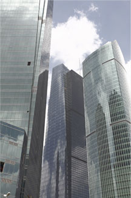

公司简介
纳普国际是一家专注于为客户提供专业级水平数据中心(Data Centre)建设项目及IT信息技术基础设施整体解决方案的高科技企业从规划设计、方案提供、技术研发、设备供应、项目管理、施工、调试、用户培训、用户培训、维护保养7×24×365紧急现场服务，纳普科技均能提供一站式解决方案和服务。
纳普国际吸引国内本领域最具经验的设计/管理人才;海纳全球最前沿的规划设计理念、品质控制技术、国际知名度品牌、结合国内的项目实践，运用最先进的技术、严格的管理；NATop始终保证技术领先，遵循专业人员提供专业的准则，为客户提供数据中心项目一站式服务和IT系统集成的专业服务，权利打造精品项目。
纳普国际与世界顶级厂商（如APC/MGE EMERON TROXAITCS）保持紧密联系，引进世界范围内本领域最尖端和最高品质的专业产品，积极推动国内本行业的技术和科技发展，NATop已经成为澳大利亚VESDA,瑞典AXIS，加拿大INOVA，意大利RC等国际知名品牌的专业代理，并且是美国Sensaphone,法国TTK在中国区的总代理。
纳普国际从成立之初,就专注于自己最擅长的领域,因为NATop的专业服务和高品质的项目赢得客户的高度赞誉,我们服务的客户有银行证券等金融机构、跨国公司、政府部门、电信行业、IT公司、能源行业等等。
我们的专业人员所提供的专业服务一定能最恰当地诠释您的要求，打造符合您需要的高品质项目。
